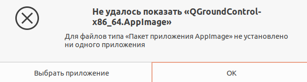
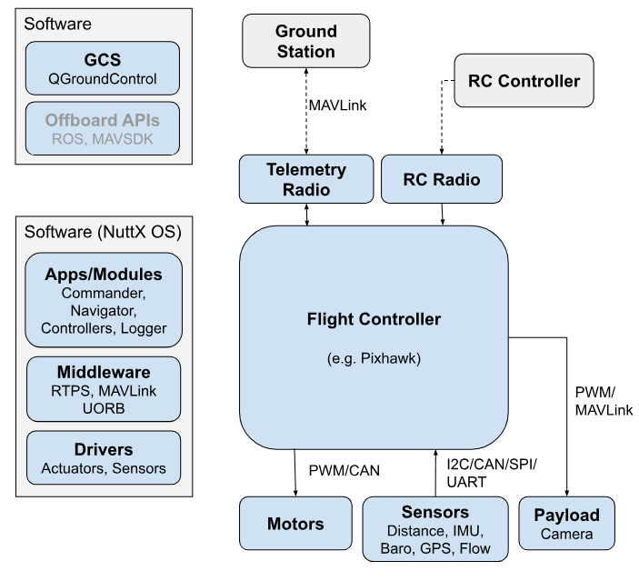
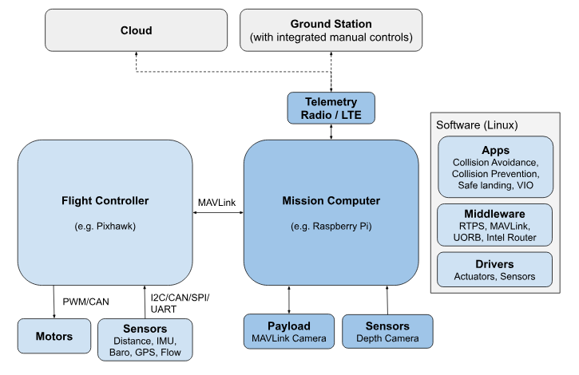

Некоторые автопилоты также включают в себя вычислительную систему общего назначения, которая может обеспечить управление на "более высоком уровне" и может поддерживать более продвинутые сетевые технологии, компьютерное зрение и другие функции. Это может быть реализовано в виде отдельного сопутствующего компьютера, но в будущем, скорее всего, это будет полностью интегрированный компонент.
Особенности PX4:
QGroundControl взаимодействует с дроном с помощью телеметрической радиостанции (двунаправленный канал передачи данных), которая позволяет получать информацию о полете и безопасности в режиме реального времени, а также управлять транспортным средством, камерой и другими полезными устройствами с помощью интерфейса "наведи и щелкни". На оборудовании, которое их поддерживает, вы также можете управлять транспортным средством вручную с помощью джойстиков. QGC также можно использовать для визуального планирования, выполнения и мониторинга автономных миссий, установки геозон и многого другого.
Настольные версии QGroundControl также используются для установки (прошивки (firmware)) встроенного ПО PX4 и настройки PX4 на аппаратном обеспечении автопилота/контроллера полета дрона.
PX4 может работать на множестве различных типов полётного контроллера, начиная от контроллеров серии Pixhawk и заканчивая компьютерами Linux. К ним относятся стандартные платы Pixhawk и платы, поддерживаемые производителем. Вам следует выбрать доску, которая соответствует физическим возможностям вашего автомобиля, видам деятельности, которые вы хотите выполнять, и стоимости.
Пользователи Docker также могут создавать с помощью контейнеров, используемых нашей системой непрерывной интеграции: Docker Containers.
После того как закончили установку указанных выше программ (ros, gazebo) далее следующие шаги:
ПО включает в себя:
Установка набора инструментов:
git clone https://github.com/PX4/PX4-Autopilot.git --recursive
bash ./PX4-Autopilot/Tools/setup/ubuntu.sh
Можете использовать опции --no-nuttx и --no-sim-tools, чтобы не использовать NuttX и/или инструменты моделирования.
Как только вы закончите настройку набора инструментов командной строки:
Программное обеспечение Dronecode GCS называется QGroundControl ("QGC"). Оно работает на оборудовании Windows, Android, macOS или Linux и поддерживает широкий спектр форм-факторов экрана. Вы можете скачать его (бесплатно) здесь.
QGroundControl взаимодействует с дроном с помощью телеметрической радиостанции (двунаправленный канал передачи данных), которая позволяет получать информацию о полете и безопасности в режиме реального времени, а также управлять транспортным средством, камерой и другими полезными устройствами с помощью интерфейса "наведи и щелкни". На оборудовании, которое их поддерживает, вы также можете управлять транспортным средством вручную с помощью джойстиков. QGC также можно использовать для визуального планирования, выполнения и мониторинга автономных миссий, установки геозон и многого другого.
Настольные версии QGroundControl также используются для установки (прошивки) встроенного ПО PX4 и настройки PX4 на аппаратном обеспечении автопилота/контроллера полета дрона.
Ubuntu поставляется с менеджером последовательного модема, который препятствует любому использованию последовательного порта (или USB serial), связанному с робототехникой. Перед установкой QGroundControl вам следует удалить диспетчер модемов и предоставить себе разрешения на доступ к последовательному порту. Вам также необходимо установить GStreamer для поддержки потоковой передачи видео.
Перед первой установкой QGroundControl:
В командной строке введите:
sudo usermod -a -G dialout $USER sudo apt-get remove modemmanager -y sudo apt install gstreamer1.0-plugins-bad gstreamer1.0-libav gstreamer1.0-gl -y sudo apt install libfuse2 -y sudo apt install libxcb-xinerama0 libxkbcommon-x11-0 libxcb-cursor-dev -yВыйдите из системы и войдите снова, чтобы разрешить изменение прав пользователя.
Как установить QGroundControl:
chmod +x ./QGroundControl.AppImage ./QGroundControl.AppImage(или двойной клик)
Его следует использовать вместо стабильной версии при работе с новым кодом, разветвленным из основной ветки main PX4.
Ссылка на закачку QGroundControl Daily Build для linux
Скачал файл в Загрузку, а что дальше делать, не сказано.

Вам необходимо создать PX4, чтобы использовать симуляторы, или если вы хотите модифицировать PX4 и создать пользовательскую сборку. Если вы просто хотите опробовать PX4 на реальном оборудовании, то загрузите готовые двоичные файлы с помощью QGroundControl (нет необходимости следовать этим инструкциям).
Прежде чем следовать этим инструкциям, вы должны сначала установить набор инструментов разработчика для вашей основной операционной системы и целевого оборудования (IDE и QGC).
git clone https://github.com/PX4/PX4-Autopilot.git --recursive
Возможно уже скачали репозиторий, когда устанавливали Developer Toolchain.
Перейдите в каталог PX4-Autopilot. В зависимости от вашей операционной системы у вас будет установлена либо Gazebo SITL, либо Gazebo Classic SITL (если вы не знаете, какая из них лучше, вы можете попробовать обе).
Запустите Gazebo SITL, используя следующую команду:
make px4_sitl gz_x500
После этого откроется консоль PX4.
Возможно, вам потребуется запустить QGroundControl, прежде чем продолжить, поскольку конфигурация PX4 по умолчанию требует подключения к наземному управлению перед взлетом. Загрузка и установка здесь (Загрузка и установка).
Дроном можно управлять, набрав следующую команду (как показано в консоли выше).:
pxh> commander takeoff
Дрон взлетит, и вы увидите это в пользовательском интерфейсе симулятора.
Беспилотник можно посадить, набрав команду commander land, а всю имитацию можно остановить, нажав CTRL+C (или введя команду shutdown).
Управление симулятором с помощью наземной станции управления приближено к реальному управлению транспортным средством. Нажмите на местоположение на карте во время полета транспортного средства (режим взлета) и включите ползунок. Это изменит положение транспортного средства.
Например, для сборки для аппаратного обеспечения Pixhawk 4 можно использовать следующую команду:
cd PX4-Autopilot make px4_fmu-v5_defaultУспешный запуск завершится с результатом, аналогичным следующему:
-- Build files have been written to: /home/youruser/src/PX4-Autopilot/build/px4_fmu-v4_default [954/954] Creating /home/youruser/src/PX4-Autopilot/build/px4_fmu-v4_default/px4_fmu-v4_default.px4Первая часть параметра build target px4_fmu-v4 указывает на аппаратное обеспечение целевого контроллера полета для встроенного ПО. Суффикс, в данном случае _default, указывает на конфигурацию встроенного ПО, например, на поддержку или отсутствие определенных функций.
Вы должны использовать поддерживаемую версию GCC для сборки этой платы (например, ту же, что используется CI/docker) или удалить модули из сборки. Сборка с использованием неподдерживаемого GCC может завершиться неудачей, так как PX4 близок к пределу флэш-памяти платы в 1 МБ.
Полный синтаксис для вызова make с определенным файлом конфигурации и инициализации приведен ниже.:
make [VENDOR_][MODEL][_VARIANT] [VIEWER_MODEL_DEBUGGER_WORLD]VENDOR_MODEL_VARIANT: (также известный как CONFIGURATION_TARGET)
make list_config_targets
VIEWER_MODEL_DEBUGGER_WORLD:Вы можете получить список всех доступных параметров VIEWER_MODEL_DEBUGGER_WORLD, используя приведенную ниже команду:
make px4_sitl list_vmd_make_targets
Дополнителеная информация:
Параметры VENDOR_MODEL_VARIANT сопоставляются с конкретными файлами конфигурации px4board в дереве исходных текстов PX4 в каталоге /boards. В частности, VENDOR_MODEL_VARIANT сопоставляется с файлом конфигурации boards/VENDOR/MODEL/VARIANT.px4board (например, px4_fmu-v5_default соответствует boards/px4/fmu-v5/default.px4board).

Аппаратное обеспечение состоит из:
Компьютер наземной станции обычно запускает QGroundControl (или какое-либо другое программное обеспечение наземной станции). На нем также может работать программное обеспечение для робототехники, такое как MAVSDK или ROS.
PX4 flight stack (пакет управления полетом PX4), работающий на контроллере полета, включает драйверы, модули связи, контроллеры, оценщики и другое промежуточное программное обеспечение и системные модули.

Контроллер полета управляет обычным полетным стеком PX4, в то время как компьютер-компаньон предоставляет расширенные функции, использующие компьютерное зрение. Обе системы подключены по быстрому последовательному каналу или IP-каналу и, как правило, взаимодействуют по протоколу MAVLink. Связь с наземными станциями и облаком обычно осуществляется через сопутствующий компьютер (например, с помощью маршрутизатора MAVLink (от Intel)).
Системы PX4 обычно работают под управлением операционной системы Linux на сопутствующем компьютере. Linux - гораздо лучшая платформа для разработки "общего" программного обеспечения, чем NuttX; разработчиков Linux гораздо больше, и уже написано много полезного программного обеспечения (например, для компьютерного зрения, коммуникаций, облачной интеграции, драйверов оборудования). Компьютеры-компаньоны иногда работают под управлением Android по той же причине.
Flight stack - это набор алгоритмов наведения, навигации и управления автономными беспилотными летательными аппаратами. Он включает в себя контроллеры для самолетов с неподвижным крылом, мультироторных и СВВП, а также средства оценки ориентации и положения.
middleware (промежуточное программное обеспечение) состоит в основном из драйверов устройств для встроенных датчиков, средств связи с внешним миром (сопутствующий компьютер, GCS и т.д.) и шины сообщений uORB для публикации и подписки.
Кроме того, промежуточное программное обеспечение включает в себя уровень моделирования, который позволяет запускать пилотажный код PX4 в настольной операционной системе и управлять смоделированным на компьютере транспортным средством в имитируемом "мире".
NuttX - это основная RTOS для запуска PX4 на пульте управления полетом. Она с открытым исходным кодом (лицензия BSD), легкая, эффективная и очень стабильная.
Модули выполняются как задачи: у них есть свои собственные списки файловых дескрипторов, но они используют одно адресное пространство. Задача все равно может запускать один или несколько потоков, которые используют общий список файловых дескрипторов.
Каждая задача / поток имеет стек фиксированного размера, и существует периодическая задача, которая проверяет, осталось ли во всех стеках достаточно свободного места (в зависимости от цвета стека).
Моделирование - это быстрый, простой и, самое главное, безопасный способ протестировать изменения в коде PX4 перед началом полетов в реальных условиях. Это также хороший способ начать летать с PX4, если у вас еще нет машины для экспериментов.
PX4 поддерживает как программную симуляцию в цикле (SITL), при которой стек управления полетом выполняется на компьютере (либо на том же компьютере, либо на другом компьютере в той же сети), так и аппаратную симуляцию в цикле (HITL) с использованием встроенного программного обеспечения для моделирования на реальной плате контроллера полета.

В сборке SITL для PX4 для обработки этих сообщений используется SimulatorMavlink.cpp, в то время как в аппаратной сборке в режиме HIL используется mavlink_receiver.cpp. Данные датчиков из симулятора записываются в разделы PX4 uORB. Все двигатели / исполнительные механизмы заблокированы, но внутреннее программное обеспечение полностью работоспособно.
PX4 напрямую использует Gazebo API для взаимодействия с Gazebo, и MAVLink не требуется.
Если вы используете обычную систему сборки SITL make configuration targets (см. следующий раздел), то и SITL, и симулятор будут запущены на одном компьютере, и указанные выше порты будут автоматически настроены. Вы можете настроить дополнительные UDP-соединения MAVLink и иным образом изменить среду моделирования в файлах конфигурации сборки и инициализации.
make px4_sitl simulator[_vehicle-model]
где simulator - это gz (для Gazebo), gazebo-classic, jmavsim или какой-либо другой симулятор, а модель транспортного средства - это конкретный тип транспортного средства, поддерживаемый этим симулятором (на момент написания статьи Gazebo и jMAVSim поддерживают только мультикоптеры, в то время как Gazebo Classic поддерживает множество различных типов).
Ниже приведен ряд примеров, и их гораздо больше на отдельных страницах для каждого из симуляторов:
# Start Gazebo with the x500 multicopter make px4_sitl gz_x500 # Start Gazebo Classic with plane make px4_sitl gazebo-classic_plane # Start Gazebo Classic with iris and optical flow make px4_sitl gazebo-classic_iris_opt_flow # Start JMavSim with iris (default vehicle model) make px4_sitl jmavsim # Start PX4 with no simulator (i.e. to use your own "custom" simulator) make px4_sitl none_iris
Моделирование может быть дополнительно настроено с помощью переменных среды:
PX4_ESTIMATOR: Эта переменная определяет, какой оценщик использовать. Возможные варианты: ekf2 (по умолчанию), lpe (не рекомендуется). Его можно задать с помощью export PX4_ESTIMATOR=lpe перед запуском моделирования.
Описанный здесь синтаксис упрощен, и есть много других параметров, которые вы можете настроить с помощью make - например, указать, что вы хотите подключиться к IDE или отладчику. Дополнительные сведения см. в разделе: Создание кода > PX4 Make Build Targets.
Коэффициент скорости устанавливается с помощью переменной среды PX4_SIM_SPEED_FACTOR. Например, чтобы запустить симуляцию jMAVSim со скоростью, в 2 раза превышающей скорость реального времени:
PX4_SIM_SPEED_FACTOR=2 make px4_sitl jmavsim
Для запуска в два раза меньшей скорости реального времени:
PX4_SIM_SPEED_FACTOR=0.5 make px4_sitl jmavsim
Вы можете применить этот коэффициент ко всем запускам SITL в текущем сеансе, используя EXPORT:
export PX4_SIM_SPEED_FACTOR=2 make px4_sitl jmavsim
Последовательность шагов для lockstep такова:
Аналогичным образом вы можете использовать VPN для создания туннеля к внешнему интерфейсу (в той же или другой сети).
Один из способов создания туннеля - использовать параметры SSH-туннелирования. Сам туннель можно создать, выполнив следующую команду на localhost, где remote.local - это имя удаленного компьютера:
ssh -C -fR 14551:localhost:14551 remote.local
UDP-пакеты необходимо преобразовать в TCP-пакеты, чтобы их можно было передавать по SSH. Утилиту netcat можно использовать на обеих сторонах туннеля - сначала для преобразования пакетов из UDP в TCP, а затем обратно в UDP на другом конце.
QGC должен быть запущен перед запуском netcat.
На компьютере QGroundControl преобразование пакетов UDP может быть реализовано путем выполнения следующих команд:
mkfifo /tmp/tcp2udp netcat -lvp 14551 < /tmp/tcp2udp | netcat -u localhost 14550 > /tmp/tcp2udp
На стороне симулятора SSH-туннеля команда выглядит следующим образом:
mkfifo /tmp/udp2tcp netcat -lvup 14550 < /tmp/udp2tcp | netcat localhost 14551 > /tmp/udp2tcp
Номер порта 14550 действителен для подключения к QGroundControl или другому GCS, но его следует настроить для других конечных точек (например, API разработчика и т.д.).
Теоретически туннель может работать бесконечно, но в случае возникновения проблемы может потребоваться перезапуск подключений netcat.
На компьютере QGC можно запустить скрипт QGC_remote_connect.bash для автоматической настройки/выполнения приведенных выше инструкций. Моделирование уже должно быть запущено на удаленном сервере, и у вас должна быть возможность подключиться к этому серверу по SSH.
Gazebo - это симулятор робототехники с открытым исходным кодом. Он заменяет старый классический симулятор Gazebo и является единственной поддерживаемой версией Gazebo для Ubuntu 22.04 и более поздних версий.
Поддерживаемые транспортные средства: Квадротор, самолет, СВВП, ровер
Если вы хотите использовать Gazebo в Ubuntu 20.04, вы можете установить его вручную, предварительно выполнив обычный процесс установки (установка gz-garden приведет к удалению Gazebo-Classic!).:
sudo wget https://packages.osrfoundation.org/gazebo.gpg -O /usr/share/keyrings/pkgs-osrf-archive-keyring.gpg echo "deb [arch=$(dpkg --print-architecture) signed-by=/usr/share/keyrings/pkgs-osrf-archive-keyring.gpg] http://packages.osrfoundation.org/gazebo/ubuntu-stable $(lsb_release -cs) main" | sudo tee /etc/apt/sources.list.d/gazebo-stable.list > /dev/null sudo apt-get update sudo apt-get install gz-garden
cd /path/to/PX4-Autopilot make px4_sitl gz_x500При этом запускаются как экземпляр PX4 SITL, так и клиент Gazebo.
Ниже перечислены поддерживаемые средства и команды make. Обратите внимание, что все целевые объекты gazebo make имеют префикс gz_.

Все модели транспортных средств (и миры) включены в качестве подмодуля из репозитория Gazebo Models Repository.
Приведенные выше команды запускают одно транспортное средство с полным пользовательским интерфейсом. QGroundControl должен иметь возможность автоматического подключения к моделируемому транспортному средству.
Вы запускаете PX4 в автономном режиме, добавив к команде make префикс PX4_GZ_STANDALONE=1:
cd /path/to/PX4-Autopilot PX4_GZ_STANDALONE=1 make px4_sitl gz_x500Затем PX4 SITL будет ждать, пока не обнаружит экземпляр gz-сервера, а затем подключится к нему.
WARN [gz bridge] Service call timed out as Gazebo has not been detectedСамый простой способ запустить симуляцию - использовать скрипт Python simulation-gazebo, который можно найти в репозитории Gazebo Models Repository. Его можно использовать для запуска экземпляра gz-сервера с любым поддерживаемым миром и транспортным средством.
Скрипт можно использовать без установки каких-либо дополнительных зависимостей, и он будет извлекать поддерживаемые модели и миры PX4 при первом использовании (по умолчанию) и сохранять их в ~/.simulation-gazebo. При повторном вызове скрипт будет использовать этот каталог для получения моделей и миров. Поэтому, если вы хотите использовать свою собственную модель и запускать ее в автономном режиме, вам нужно будет поместить ее исходный код в ~/.simulation-gazebo.
Вы можете скачать скрипт локально, используя любой метод, который вам нравится, например, wget:
wget https://raw.githubusercontent.com/PX4/PX4-gazebo-models/main/simulation-gazeboСкрипт можно запустить с помощью:
cd /path/to/script/ python3 simulation-gazeboДополнительные сведения и аргументы приведены в разделе Gazebo models.
Если команда make px4_sitl gz_x500 выдает ошибку: ninja: error: unknown target 'gz_x500', запустите команду make distclean, чтобы начать с чистого листа, и попробуйте снова запустить команду make px4_sitl gz_x500
Gazebo Classic - это мощная среда 3D-моделирования для автономных роботов, которая особенно подходит для тестирования способности обходить объекты и компьютерного зрения. На этой странице описано ее использование с SITL и одним транспортным средством. Gazebo Classic также можно использовать с HITL и для моделирования нескольких транспортных средств.
Поддерживаемые роботы: Quad (Iris, Hex (Typhoon H480), Generic Standard VTOL (QuadPlane), Tailsitter, Plane, Rover, Submarine/UUV.
Если вы планируете использовать PX4 с ROS, вам следует следовать инструкциям ROS, чтобы установить как ROS, так и Gazebo Classic (и тем самым избежать конфликтов при установке).
git clone https://github.com/PX4/PX4-Autopilot.git --recursive
Здесь загрузка через hhtps, для меня удобнее через ssh.
Теперь создадим имитируемую цель, используя консольную среду. Это позволит нам проверить настройки системы, прежде чем переходить к реальному оборудованию и IDE.
Перейдите в каталог PX4-Autopilot. В зависимости от вашей операционной системы у вас будет установлена либо Gazebo SITL, либо Gazebo Classic SITL (если вы не знаете, какая из них лучше, вы можете попробовать обе).
Запустите Gazebo Classic, используя следующую команду:
make px4_sitl gazebo-classic
или Gazebo:
make px4_sitl gz_x500
После этого откроется консоль PX4.
Возможно, вам потребуется запустить QGroundControl, прежде чем продолжить, поскольку конфигурация PX4 по умолчанию требует подключения к наземному управлению перед взлетом. Его можно загрузить отсюда.
Дроном можно управлять, набрав следующую команду (как показано в консоли выше).:
pxh> commander takeoff
Робот взлетит, и вы увидите это в окне симулятора Gazebo (classic).
Если вы хотите использовать Gazebo Classic в Ubuntu 22.04, вы можете использовать следующие команды, чтобы удалить Gazebo (garden), а затем переустановить Gazebo-Classic 11:
sudo apt remove gz-garden sudo apt install aptitude sudo aptitude install gazebo libgazebo11 libgazebo-devОбратите внимание, что aptitude необходим, поскольку он может разрешать конфликты зависимостей (путем удаления определенных пакетов), с которыми apt не может справиться.
cd /path/to/PX4-Autopilot make px4_sitl gazebo-classicНиже перечислены поддерживаемые транспортные средства и команды make:
make px4_sitl gazebo-classic___ide
или:
make px4_sitl gazebo-classic_iris_ide
Приведенные выше команды make сначала создают PX4, а затем запускают его вместе с симулятором Gazebo Classic.
make px4_sitl_default jmavsim
Откроется оболочка PX4 (в терминале командная строка изменится на pxh>. Также появится окно, показывающее 3D-изображение симулятора jMAVSim:
Команда для подъёма робота:
pxh> commander takeoff
Вы можете использовать QGroundControl для выполнения задания или для подключения к джойстику.
Например, чтобы задать широту, долготу и высоту над уровнем моря:
export PX4_HOME_LAT=28.452386 export PX4_HOME_LON=-13.867138 export PX4_HOME_ALT=28.5 make px4_sitl_default jmavsim
make broadcast jmavsim
Симулятор транслирует свой адрес по локальной сети, как это сделал бы настоящий беспилотник.
./Tools/simulation/jmavsim/jmavsim_run.sh -l make px4_sitl noneЭто позволяет ускорить цикл тестирования (перезапуск jMAVSim занимает значительно больше времени).
HEADLESS=1 make px4_sitl jmavsim
sudo gedit /etc/java-8-openjdk/accessibility.properties
и закомментируйте строку, указанную ниже:
#assistive_technologies=org.GNOME.Acessibility.AtkWrapper
Готовые образы можно найти на Github здесь. Они автоматически создаются в Docker Hub.
Dockerfiles смотреть здесь
По моей теме изучения самый интересный Dockerfile_ros-noetic
- px4io/px4-dev-base-focal
- px4io/px4-dev-nuttx-focal
- px4io/px4-dev-simulation-focal
- px4io/px4-dev-ros-noetic
- px4io/px4-dev-ros2-foxy
- px4io/px4-dev-ros2-rolling
- px4io/px4-dev-base-jammy
- px4io/px4-dev-nuttx-jammy
Доступ к самой последней версии можно получить, используя тег latest: px4io/px4-dev-nuttx-focus:latest
mkdir src cd src git clone https://github.com/PX4/PX4-Autopilot.git cd PX4-Autopilot
./Tools/docker_run.sh 'make px4_sitl_default'
Или запустить сеанс bash с помощью набора инструментов NuttX:
./Tools/docker_run.sh 'bash'
Скрипт прост, потому что вам не нужно много знать о Docker или думать о том, какой контейнер использовать. Однако он не особенно надежен! Ручной подход, описанный в разделе ниже, более гибкий, и его следует использовать, если у вас возникнут какие-либо проблемы со скриптом.
# enable access to xhost from the container
xhost +
# Run docker
docker run -it --privileged \
--env=LOCAL_USER_ID="$(id -u)" \
-v <host_src>:<container_src>:rw \
-v /tmp/.X11-unix:/tmp/.X11-unix:ro \
-e DISPLAY=:0 \
-p 14570:14570/udp \
--name=<local_container_name> <container>:<tag> <build_command>
Где,
# enable access to xhost from the container xhost + # Run docker and open bash shell docker run -it --privileged \ --env=LOCAL_USER_ID="$(id -u)" \ -v ~/src/PX4-Autopilot:/src/PX4-Autopilot/:rw \ -v /tmp/.X11-unix:/tmp/.X11-unix:ro \ -e DISPLAY=:0 \ --network host \ --name=px4-ros px4io/px4-dev-ros2-foxy:2022-07-31 bashМы используем режим host network, чтобы избежать конфликтов между управлением доступом к порту UDP при использовании QGroundControl в той же системе, что и контейнер docker.
Если вы столкнулись с ошибкой "Can't open display: :0", возможно, для DISPLAY необходимо установить другое значение. На хосте Linux (XWindow) вы можете изменить -e DISPLAY=:0 на -e DISPLAY=$DISPLAY. На других хостах вы можете iterate 0 в -e DISPLAY=:0 до тех пор, пока ошибка "Can't open display: :0" не исчезнет.
Если все прошло хорошо, вы уже должны быть в новой оболочке bash. Проверьте, все ли работает, запустив, например, SITL:
cd src/PX4-Autopilot #This ismake px4_sitl_default gazebo-classic
# start the container docker start container_name # open a new bash shell in this container docker exec -it container_name bashЕсли вам нужно подключить к контейнеру несколько оболочек, просто откройте новую оболочку и снова выполните эту последнюю команду.
Если вы не можете вспомнить название, вы можете перечислить идентификаторы неактивных контейнеров, а затем удалить их, как показано ниже:
docker ps -a -q 45eeb98f1dd9 docker rm 45eeb98f1dd9
$ docker inspect -f '{{range .NetworkSettings.Networks}}{{.IPAddress}}{{end}}' mycontainer
Graphics Driver Issues
Вполне возможно, что запуск Gazebo Classic приведет к появлению аналогичного сообщения об ошибке, подобного приведенному ниже:
libGL error: failed to load driver: swrast
В этом случае необходимо установить собственный графический драйвер для вашей хост-системы. Загрузите нужный драйвер и установите его внутри контейнера. Для драйверов Nvidia следует использовать следующую команду (в противном случае программа установки увидит загруженные модули с хоста и откажется выполнять дальнейшую работу).:
./NVIDIA-DRIVER.run -a -N --ui=none --no-kernel-module
Более подробную информацию об этом можно найти здесь.
Например, вы можете захотеть создать новые "умные" режимы полета или пользовательские режимы геозоны, или интегрировать новое оборудование. API-интерфейсы беспилотных летательных аппаратов позволяют вам делать это, используя высокоуровневые инструкции на выбранном вами языке программирования, а затем код может быть запущен в автомобиле на вспомогательном компьютере или с наземной станции. По сути, API-интерфейсы взаимодействуют с PX4 с помощью MAVLink или uXRCE-DDS.
PX4 поддерживает следующие SDK/инструменты для робототехники:
Основными отличиями являются:
MAVSDK:
ROS 1 по-прежнему "работает" на PX4, поскольку использует MAVROS, абстракцию MAVLINK-ROS, в качестве интеграционного уровня. Это означает, что ROS 1 обладает всеми недостатками MAVLink, такими как более высокая задержка и небольшая площадь API (а также преимуществами, такими как стабильный интерфейс).
Все инвестиции PX4 в ROS направлены на глубокую интеграцию с ROS 2. По сути, это позволит сделать приложения ROS 2 практически неотличимыми от кода, выполняемого в самом PX4.
Используйте ROS 2 для новых проектов. Как можно скорее перейдите на ROS 2 для существующих проектов
DroneKit
DroneKit-Python - это API MAVLink, написанный на Python. Он не оптимизирован для использования с PX4 и не поддерживался в течение нескольких лет. Устаревшие документы по использованию PX4 и DroneKit можно найти здесь: PX4 v1.12 > DroneKit.
ROS (1) - это библиотека робототехники общего назначения, которую можно использовать с PX4 для разработки приложений для беспилотных летательных аппаратов.
В этой версии ROS используется пакет MAVROS для взаимодействия с PX4 через MAVLink (MAVROS связывает темы ROS с соглашениями MAVLink и PX4).
MAVROS - это пакет ROS 1, который обеспечивает расширяемую связь MAVLink между компьютерами, работающими под управлением ROS 1, для любого автопилота, наземной станции или периферийного устройства с поддержкой MAVLink. MAVROS - это "официальный" поддерживаемый мост между ROS 1 и протоколом MAVLink.
Сначала мы устанавливаем PX4 и ROS, а затем MAVROS.
Эти инструкции представляют собой упрощенную версию официального руководства по установке. Они охватывают релизы ROS Melodic и Noetic.
Если вы работаете с ROS Noetic в Ubuntu 20.04:
git clone https://github.com/PX4/PX4-Autopilot.git --recursive
bash ./PX4-Autopilot/Tools/setup/ubuntu.sh --no-sim-tools --no-nuttx
Отвечайте на все запросы по мере выполнения сценария.
sudo apt-get install protobuf-compiler libeigen3-dev libopencv-dev -y
Бинарная установка (Debian / Ubuntu)
В репозитории ROS есть бинарные пакеты для Ubuntu x86, amd64 (x86_64) и armhf (ARMv7). Kinetic также поддерживает Debian Jessie amd64 и arm64 (ARMv8).
Используйте apt-get для установки, где ${ROS_DISTRO}, указанный ниже, должен преобразоваться в kinetic или noetic, в зависимости от вашей версии ROS:
sudo apt-get install ros-${ROS_DISTRO}-mavros ros-${ROS_DISTRO}-mavros-extras ros-${ROS_DISTRO}-mavros-msgs
Затем установите данные GeographicLib, запустив скрипт install_geographiclib_datasets.sh :
wget https://raw.githubusercontent.com/mavlink/mavros/master/mavros/scripts/install_geographiclib_datasets.sh sudo bash ./install_geographiclib_datasets.sh
Установка с помощью исходного кода:
При такой установке предполагается, что у вас есть рабочее пространство catkin, расположенное по адресу ~/catkin_ws, если вы не создадите его с помощью:
mkdir -p ~/catkin_ws/src cd ~/catkin_ws catkin init wstool init srcДля этой установки вы будете использовать инструменты ROS Python: wstool (для извлечения исходных текстов), rosinstall и catkin_tools (для сборки). Хотя они могли быть установлены во время установки ROS, вы также можете установить их с помощью:
sudo apt-get install python-catkin-tools python-rosinstall-generator -y
Хотя пакет может быть собран с помощью catkin_make, предпочтительным методом является использование catkin_tools, поскольку это более универсальный и "дружественный" инструмент сборки.
Если вы впервые используете wstool, вам нужно будет инициализировать исходное пространство с помощью:
wstool init ~/catkin_ws/src
Теперь вы готовы приступить к сборке:
# We use the Kinetic reference for all ROS distros as it's not distro-specific and up to date rosinstall_generator --rosdistro kinetic mavlink | tee /tmp/mavros.rosinstall
rosinstall_generator --upstream mavros | tee -a /tmp/mavros.rosinstall
rosinstall_generator --upstream-development mavros | tee -a /tmp/mavros.rosinstall
# For fetching all the dependencies into your catkin_ws, # just add '--deps' to the above scripts, E.g.: # rosinstall_generator --upstream mavros --deps | tee -a /tmp/mavros.rosinstall
wstool merge -t src /tmp/mavros.rosinstall wstool update -t src -j4 rosdep install --from-paths src --ignore-src -y
./src/mavros/mavros/scripts/install_geographiclib_datasets.sh
#Needed or rosrun can't find nodes from this workspace. source devel/setup.bash